Accueil
Adopter
Qui sommes nous ?
Nos chats
Des nouvelles de nos chats
Ils nous ont quittés
Nous aider
Nos actions
Nos actions récentes
Archives
Gazette
Contacts
Adopter le compagnon
idéal
de vos rêves
qui changera votre vie
fait pour vous
qui remplira votre coeur
aussi unique que vous
qui vous attend
En attente d'adoption
Si vous souhaitez en savoir plus à propos d’un chat, cliquez sur sa photo
Tous
Adultes
Chatons
Nom du Chat
Âge
"Citation"